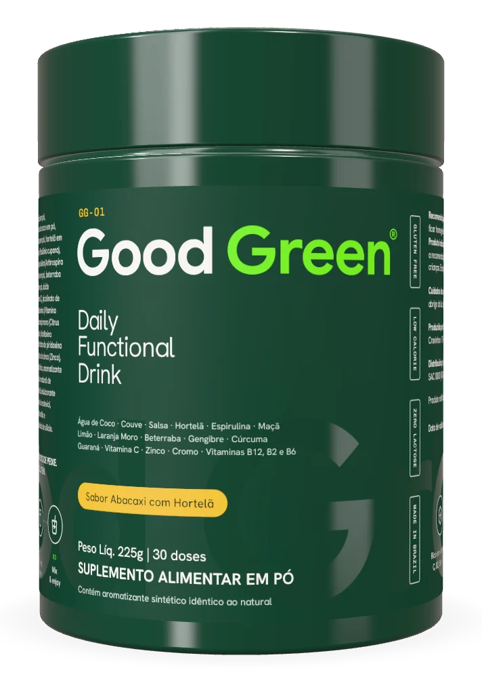

01 O que é o microbioma
O intestino não é só um tubo por onde passa a comida. Ao longo dele vive uma comunidade enorme de microrganismos: principalmente bactérias, mas também fungos, vírus e outros seres microscópicos. Esse conjunto recebe o nome de microbiota intestinal. Já o termo microbioma costuma ser usado de forma mais ampla, para falar desses microrganismos, dos seus genes e do ambiente em que vivem.
As estimativas mais citadas falam em trilhões de células microbianas, em número da mesma ordem de grandeza das células do próprio corpo. A maior parte está no intestino grosso, onde o trânsito é mais lento e há mais alimento disponível para elas.
Cada pessoa tem uma composição própria. Ela começa a se formar no nascimento e muda ao longo da vida, conforme a alimentação, o ambiente, a idade, o uso de medicamentos e muitos outros fatores. Não existe um microbioma padrão que sirva de modelo para todo mundo.
Esses microrganismos não estão ali de passagem. Eles se alimentam de partes da comida que o nosso corpo não consegue digerir sozinho, principalmente certos tipos de fibra. Ao fazer isso, produzem substâncias que interagem com o organismo de várias formas. É uma convivência antiga, moldada ao longo da evolução.
Um dos processos mais estudados é a fermentação das fibras. Quando parte da microbiota quebra essas fibras, produz compostos chamados ácidos graxos de cadeia curta, como o butirato. Eles servem de combustível para as células que revestem o intestino grosso e estão entre os temas centrais da pesquisa na área. Ainda há muito a entender sobre como esses compostos agem em cada pessoa.
“Não existe um microbioma ideal. Existe o seu, e ele convive com o que você faz todos os dias.”

02 Por que a diversidade importa
Quando pesquisadores comparam a microbiota de grupos diferentes de pessoas, um padrão aparece com frequência: comunidades com maior variedade de espécies costumam estar associadas a dietas mais variadas e ricas em vegetais. Por isso, a diversidade é um dos indicadores mais estudados na área.
A lógica lembra a de um ecossistema natural. Uma floresta com muitas espécies tende a lidar melhor com mudanças do que uma plantação de uma espécie só. No intestino, diferentes microrganismos se especializam em diferentes alimentos e funções. Quanto mais variados os grupos, mais tarefas podem ser cumpridas.
Vale ler isso com cuidado. Associação não é o mesmo que causa. Saber que pessoas com dietas variadas têm microbiotas mais diversas não prova, sozinho, que a diversidade explica tudo o que se observa nesses estudos. Ainda assim, a recomendação de variar a alimentação aparece em praticamente todas as diretrizes nutricionais, por motivos que vão muito além do intestino.
O oposto também aparece nos estudos. Dietas pouco variadas, com muitos ultraprocessados e poucos vegetais, costumam estar associadas a uma microbiota menos diversa. A orientação do Guia Alimentar para a População Brasileira, de basear a alimentação em alimentos in natura e minimamente processados, conversa bem com essa linha de pesquisa.
Uma ideia que ganhou espaço nos últimos anos é contar as plantas diferentes que entram no prato ao longo da semana: frutas, legumes, verduras, grãos, leguminosas, castanhas, sementes, ervas e especiarias. Não há um número mágico comprovado, mas o exercício ajuda a enxergar a variedade da alimentação de forma prática.
03 Fibras e prebióticos nos alimentos
As fibras alimentares são partes dos vegetais que o sistema digestivo não consegue quebrar por completo. Elas chegam ao intestino grosso praticamente intactas e, lá, servem de alimento para parte da microbiota.
Existem fibras de vários tipos. Algumas se dissolvem em água e formam uma espécie de gel, como as presentes na aveia, no feijão e em muitas frutas. Outras não se dissolvem e dão volume, como as da casca dos grãos integrais e de muitas verduras. A maioria dos alimentos de origem vegetal tem uma mistura das duas.
Prebiótico é um termo mais específico. Ele se refere a componentes usados de forma seletiva por microrganismos do intestino. Alguns exemplos estudados são a inulina e os frutooligossacarídeos, encontrados em alimentos como cebola, alho, alho-poró, banana mais verde e chicória. Nem toda fibra é considerada prebiótica, e o uso do termo segue critérios científicos e regulatórios.
Probióticos são outra coisa: microrganismos vivos, presentes em alguns alimentos fermentados e em produtos específicos. Iogurte, kefir, coalhada e vegetais fermentados, como o chucrute, entram nessa conversa. Os efeitos estudados variam muito conforme a cepa e a quantidade, e a pesquisa ainda está separando o que vale para cada caso. A Good Green não contém probióticos.
Quanto consumir? Uma referência comum em diretrizes nutricionais é de cerca de 25 g de fibras por dia para adultos. É uma referência geral, não uma meta individual. Levantamentos sobre hábitos alimentares costumam indicar que boa parte da população fica abaixo dela.
O caminho mais simples para chegar perto dessa referência passa pela comida de verdade: feijão e outras leguminosas, frutas, de preferência com casca quando ela é comestível, verduras, legumes, grãos integrais e sementes. Aumente a quantidade aos poucos e beba água ao longo do dia, porque uma mudança brusca pode causar desconforto em algumas pessoas.
Dica: monte o prato pensando em cor. Cada cor costuma indicar um grupo diferente de vegetais, e variar as cores é um jeito fácil de variar as fibras.
04 Hábitos do dia a dia
A alimentação é o fator mais estudado, mas não é o único. Outros hábitos fazem parte do mesmo ambiente e costumam aparecer juntos nas recomendações de saúde.
Água. As fibras precisam de líquido para cumprir o seu papel no trânsito intestinal. A necessidade varia com o clima, o corpo e a atividade, mas beber água regularmente ao longo do dia é uma orientação presente em quase todas as diretrizes.
Sono. Estudos sugerem que o ritmo de sono e vigília, o chamado ritmo circadiano, também se relaciona com a microbiota. Ainda é um campo em desenvolvimento. O que já é consenso é que dormir bem, em horários regulares, faz parte de uma rotina saudável de forma geral.
Movimento. Pesquisas observam diferenças na microbiota de pessoas fisicamente ativas e sedentárias. Ainda não se sabe o peso exato do exercício nessa relação. Mesmo assim, a atividade física regular é recomendada por inúmeras outras razões, e a maioria das diretrizes sugere, como referência geral, pelo menos 150 minutos de atividade moderada por semana para adultos.
Regularidade. Refeições em horários parecidos, sem longos intervalos seguidos de excessos, costumam ser recomendadas por nutricionistas. O mesmo vale para os hábitos acima: um dia isolado conta pouco. O que faz diferença na rotina é a repetição.
Na prática, um dia que reúne esses hábitos não precisa ser complicado. Um café da manhã com fruta, um almoço com feijão, salada e legumes, uma garrafa de água por perto, uma caminhada depois do almoço ou no fim da tarde e um horário parecido para dormir. Nenhum desses itens exige produto especial. Exige repetição, e a repetição fica mais fácil quando cada hábito tem um lugar fixo no dia.
Há ainda fatores que fogem do controle diário, como genética, idade e uso de antibióticos. Medicamentos só devem ser usados, ou suspensos, com orientação médica.
05 O que a ciência sabe e o que ainda não sabe
A pesquisa sobre microbioma cresceu muito nas últimas duas décadas, impulsionada por técnicas que permitem identificar microrganismos pelo seu material genético. Isso trouxe descobertas importantes e, junto com elas, muita expectativa.
O que está bem estabelecido. A microbiota existe em grande quantidade, varia muito entre pessoas, responde à alimentação e participa da fermentação das fibras. Também há consenso de que dietas ricas em vegetais variados estão associadas a padrões considerados favoráveis pelos pesquisadores.
O que ainda está em aberto. Não existe um perfil de microbiota saudável definido que valha para todos. Boa parte dos estudos é observacional ou feita em animais, o que limita as conclusões sobre causa e efeito em pessoas. Testes vendidos ao consumidor para analisar o próprio microbioma ainda têm utilidade clínica limitada, segundo muitas revisões científicas.
Outro ponto em aberto é a variação individual. Duas pessoas podem reagir de forma diferente ao mesmo alimento, e parte dessa diferença parece estar ligada à microbiota de cada uma. Estudos sobre nutrição personalizada exploram essa ideia, mas ainda estão longe de virar recomendação prática para o dia a dia.
Por isso, desconfie de promessas rápidas. Nenhum alimento ou produto isolado transforma o intestino de um dia para o outro. Quando um tema científico é novo e popular, é comum o marketing andar mais rápido que as evidências.
A conclusão prática é menos chamativa e mais confiável: comer vegetais variados, incluir fibras, beber água, dormir bem, se movimentar e manter uma rotina regular. São recomendações antigas, que a ciência do microbioma, até aqui, ajuda a entender melhor.
06 O que a Good Green leva para a rotina
A Good Green é um pó para misturar em água, no sabor abacaxi com hortelã. Ela não é medicamento, não trata nem previne doenças e não substitui uma alimentação variada. O papel dela é entrar na rotina como um passo diário, fácil de repetir.
Cada porção de 7,5 g leva 2 g de fibras, vindas da polidextrose e dos ingredientes vegetais da fórmula. Leva também ingredientes vegetais em pó, como couve, espirulina, salsa, gengibre, beterraba, cúrcuma, maçã e água de coco.
Pelo rótulo, a fórmula é rica em vitaminas C, B2, B6 e B12, cromo e zinco. É baixa em calorias, zero lactose e não contém glúten. Tem cafeína do guaraná: 75 mg por porção.
O modo de uso é simples: uma medida em 300 ml de água, uma vez ao dia. Para ver cada ingrediente com a quantidade, visite a página de ingredientes e o guia como ler a tabela nutricional.

Perguntas frequentes
No dia a dia, os termos são usados quase como sinônimos. Em sentido técnico, microbiota se refere aos microrganismos, e microbioma inclui também os seus genes e o ambiente em que vivem.
Uma referência geral comum é de cerca de 25 g por dia para adultos. A necessidade individual varia, e um nutricionista pode orientar o que faz sentido para você.
Para a maioria das pessoas, não. Esses testes ainda têm uso clínico limitado. Hábitos como variar os vegetais, incluir fibras e beber água valem para quase todo mundo.
Não. Ela é um complemento para a rotina. A base continua sendo uma alimentação variada, com vegetais frescos no prato.
Este conteúdo é educativo e não substitui orientação de nutricionista ou médico.